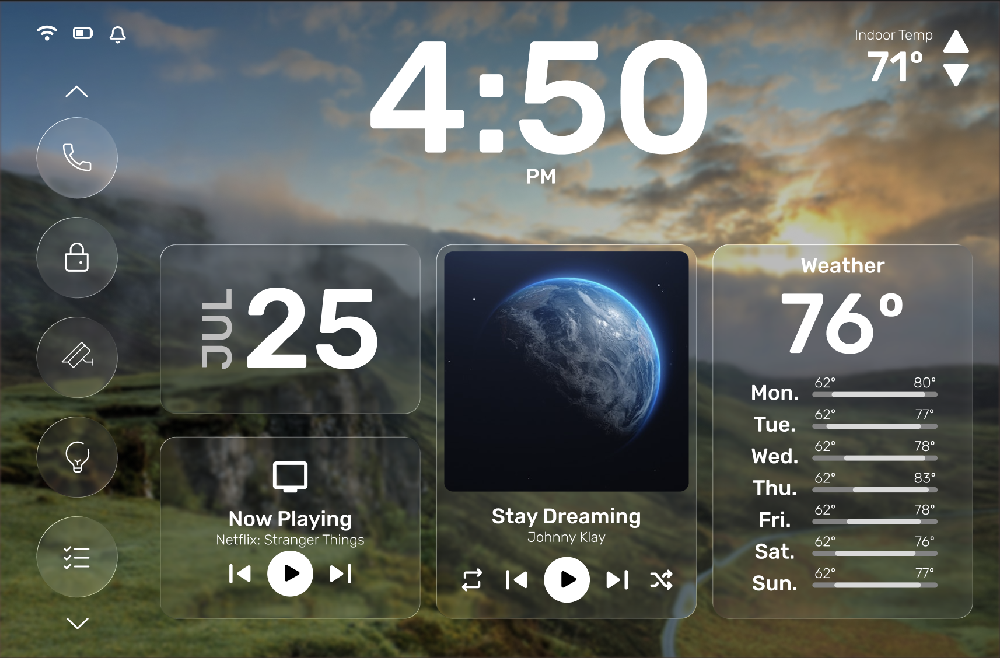
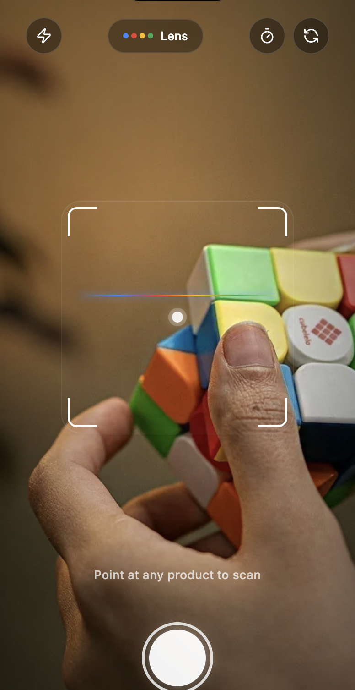
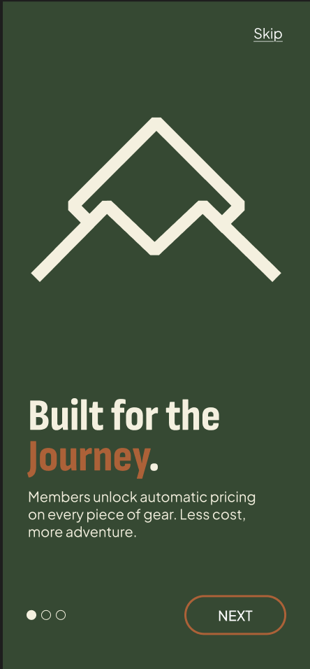

SYS.01 // APPLE ARCHITECTURE
CROSS-DEVICE ECOSYSTEM · 2026

iOS Ecosystem
Deep multi-device task synchronization connecting Reminders, Widgets, Focus States, and Calendar events into a single unified flow.

Exploring user habits, complex multi-surface workflows, and cohesive screen architectures across web and mobile ecosystems.



A balanced smart home interface optimizing glanceable room controls, card elevation, and quick ambient toggles.
Test Prototype
A single-surface checkout interaction designed to eliminate multi-step cart friction and reduce cart abandonment.
Test Prototype
A progressive setup flow engineered to guide first-time mobile users through permissions while demonstrating core value.
Test Prototype